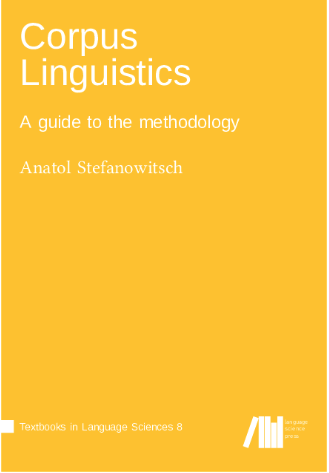
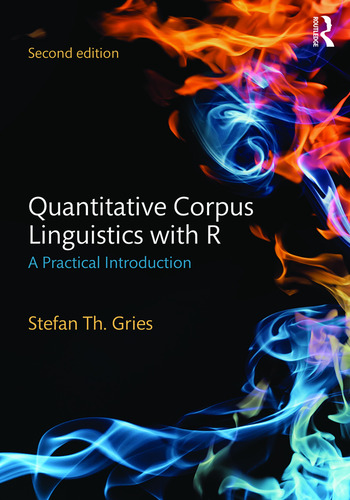
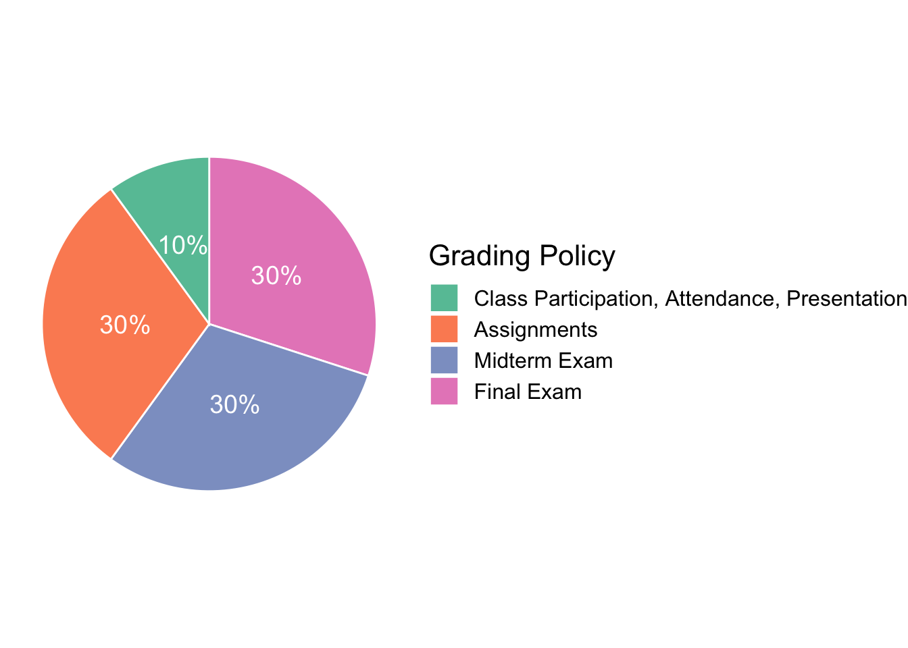

Corpus Linguistics
2022-05-23
Preface
Welcome to ENC2036. This is a grad-level course, which is devoted to one of the most active sub-fields of applied linguistics, i.e., Corpus Linguistics. Have you decided to embark on a digital journey to your future career, there are a series of courses provided in the Department of English, NTNU, Taiwan, offering necessary inter-disciplinary skills and knowledge for quantitative and computational analysis of language.
This course requires as prerequisite basic-level knowledge of coding skills. Students are expected to have taken ENC2055 or other equivalents of introductory programming courses before taking this course. Please see the FAQ of the course website for more information about the prerequisite.
Course Objective
This course aims to introduce theories and practices of Corpus Linguistics as a scientific discipline of its own. Corpus Linguistics has now been considered an interdisciplinary subject, requiring knowledge of linguistic theories, quantitative statistics and data processing. Therefore, this course aims to provide the necessary foundation as well as computational skills for students who are interested in conducting corpus-based linguistic research or language-related research. Students are expected to learn:
- the methodological foundations of Corpus Linguistics
- the theoretical bases of Corpus Linguistics
- the technical designs and configuration of standard corpora
- how to adopt corpus linguistics as a scientific method in terms of:
- corpus creation
- operationalization
- data retrieval
- quantifying research questions
- significance testing
- the common applications of corpus-linguistic methodology:
- concordances
- frequency lists
- collocations
- keywords
- lexical bundles
- word clouds
- vector-space representation of words and texts
This course is extremely hands-on and will guide the students through classic examples of these corpus-based applications via in-class tutorial sessions and take-home assignments. The main objective of this course is to provide students enough computational skills to perform similar corpus-based analyses on their own data or research questions. Also, it will provide specific hands-on tutorials to equip students with the necessary skills of text and statistical processing. This course will be a prerequisite for more advanced courses such as Computational Linguistics and Quantitative Corpus Linguistics.
Reading Materials
The course lectures will follow the materials provided on the course website. Please preview the lecture notes before the class.
Also, for each topic, please review the assigned readings on your own. These readings will be part of the midterm and final exams as well.
In particular, we will be referring to two useful reference books as our main reading materials– Stefanowitsch (2019), Gries (2016).


In addition, there are a few more reference books listed at the end of the section (See References), which we will refer to for specific topics, including Gries (2021b), Baayen (2008), Brezina (2018), McEnery & Hardie (2011), Wynne (2006), Winter (2020), Hunston (2022), Bird et al. (2009).
In particular, assigned readings for each chapter are listed as shown below.
| Chapter | Assigned Readings |
|---|---|
| 1 | Gries (2021b), ch1; McEnery & Hardie (2011), ch1; Stefanowitsch (2019), ch1-2 |
| 2 | Check ENC2055; Wickham & Grolemund (2017) |
| 3 | Wynne (2006), ch1-2; Munzert et al. (2014), ch2&9 |
| 4 | Hunston (2022), Ch2-3; Stefanowitsch (2019), Ch4; Gries (2016), Ch3; Evert (2007) |
| 5 | Bird et al. (2009), ch3&5; Gries (2016), Ch3; Stefanowitsch (2019), Ch7-8 |
| 6 | Stefanowitsch (2019), Ch10 |
| 7 | Lecture Notes Only |
| 8 | Stefanowitsch & Gries (2003); Stefanowitsch & Gries (2005); Gries & Stefanowitsch (2004) |
| 9 | Lecture Notes Only |
| 10 | Wynne (2006), ch3,4,6; |
| 11 | Gries (2016), ch3; Munzert et al. (2014), ch3-4 |
| 12 | Jurafsky & Martin (2022), ch6 |
Course Requirement

Exams
The midterm and final exams will be a timed in-class open-book examination. Questions will include both coding exercises as well as essay questions (on the course materials). All exams will be considered individual work with no inter-personal communication. Please see Academic Integrity below.
Course Website
We have a course website. You may need a password to access the course materials (i.e., the data sets). If you are an officially enrolled student, please ask the instructor for the pass code.
Please read the FAQ of the course website before course registration.
Contributing to the Lecture Notes
Although I have tried every possible way to make sure that the contents are correct, I may still accidentally make mistakes in the materials. If you spot any errors and would like make suggestions for better solutions, I would really appreciate it.
To contribute your ideas, you can annotate the lecture notes using Hypothes.is, which is an amazing tool for website annotations.
Go to Hypothes.is, and click the “get-started” on the top-right corner of the homepage.
Install the the add-on for chrome, or other browser. (Optional!)
To add an annotation, select some text and then click the on the pop-up menu. To see the annotations of others, click the in the upper right-hand corner of the page.
Please turn on the Hypothes.is add-on when you are reading the course lecture notes, and you will see all public/shared annotations made by other course participants.
See Quick Start Guide for Students and Annotation Tips for Students.
At the beginning of the semester, I will share with the class a link to invite all the enrolled students to join a private group for annotation. But one can always provide feedbacks via the public annotations of the website.
Course Demo Data
Dropbox Demo Data Directory (Password protected)
Academic Integrity
All coding assignments are to be individual work, but discussion or collaboration with others is allowed. However, direct copying of others’ codes is absolutely forbidden. Any incidents of academic misconduct such as cheating, plagiarism, copying others’ work, or other inappropriate assistance on projects or examinations will be treated with zero tolerance and will result in a grade of “F” for the course. In particular, the midterm and final exams are taken seriously as individual work with absolutely no outside help or assistance. Breaches of academic integrity may also result in other action being taken by the University.
House-keeping Guidelines
- Please direct all your course-related questions to the Discussion Forum on Moodle. Do not send your coding questions to the TA via email. By posting all the questions on Moodle, we can also make sure that those with similar questions would get proper assistance as well.
- If you need to consult TA (Howard Su) for technical help, please make an appointment with TA first. A recommended session is the hour after each week’s meeting.
- Please submit your coding assignments on time. Late submissions are subject to points deduction as a late penalty.
- All assignments must be submitted via Moodle.
- Please make sure that your access to Moodle is active. It is the student’s responsiblity to keep themselves posted of the most recent announcements.
Necessary Packages
In this course, we will need the following R packages for tutorials and exercises.
library(dplyr)
library(ggplot2)
library(ggpubr)
library(ggrepel)
library(gutenbergr)
library(htmlwidgets)
library(jiebaR)
library(kableExtra)
library(parallel)
library(purrr)
library(quanteda)
library(RColorBrewer)
library(readtext)
library(reticulate)
library(Rtsne)
library(rvest)
library(showtext)
library(spacyr)
library(stringr)
library(text2vec)
library(textdata)
library(tidyr)
library(tidytext)
library(tidyverse)
library(wordcloud)
library(wordcloud2)Environment Settings
The R Version to produce the lecture notes: R version 4.1.2 (2021-11-01)
If your R version is older than the above one, please consider updating your R. Details about updating R can be found in: